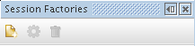
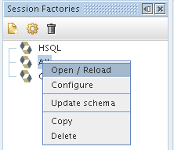

It displays all installed session factories. Can be accessed by using the menu entry Window | Hibernate Console | Session Factories
The small toolbar buttons can be used to add, configure or remove a session factory.

Each session factory also has a context menu.
